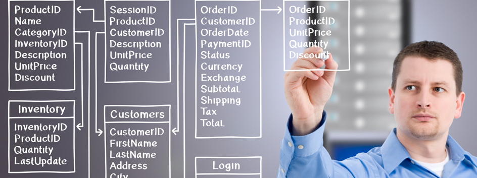

gestionnaire de base de donnée |
 |
Quel est le rôle d’un gestionnaire base de données ?Le gestionnaire base de données est responsable du système de gestion, s’assure de la sécurité des données numériques de son entreprise et rend ces informations accessibles aux collaborateurs. Le gestionnaire base de données est également connu sous le nom d’administrateur de base de données. Quelles sont les missions d’un gestionnaire base de données ?Le gestionnaire base de données est responsable du système de gestion, s’assure de la sécurité des données numériques de son entreprise et rend ces informations accessibles aux collaborateurs. Le gestionnaire base de données est également connu sous le nom d’administrateur de base de données. Quelles sont les compétences et qualités requises pour un gestionnaire base de données ? |